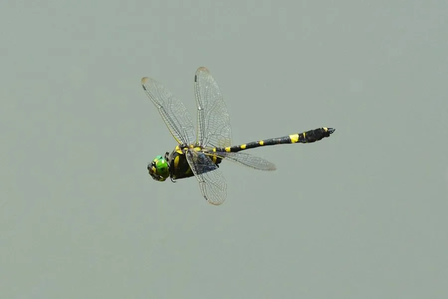

昆虫 · 动物界
闪蓝丽大蜻 Epophthalmia elegans

中国南方常见的美丽蜻蜓，翅脉黑色、翅基带深色斑，雄虫体色带蓝灰色粉霜，常在林缘水塘和溪流附近飞舞。
- 分类
- 门节肢动物门纲昆虫纲目蜻蜓目科伪蜓科属丽大蜻属
- 栖息环境
- 林区溪流、水塘与沼泽等清洁水域附近，成虫在林缘活动
- 地理分布
- 东亚，中国南方及日本、朝鲜半岛等地
- 保护级别
- 暂无评估
物种志
闪蓝丽大蜻成虫体长 4.5–5.5 cm，翅展约 8–9 cm。它的复眼大而突出，占据头部大部分；雄虫的胸部覆蓝灰色粉霜，腹部黑色带浅色斑纹，翅脉黑色，翅基部有深褐色斑块，飞行时翅面显得宽大而舒展。
闪蓝丽大蜻分布于东亚，常见于中国南方、日本和朝鲜半岛，栖息于林区溪流、水塘和沼泽等清洁水域附近。它的幼虫生活在水中，捕食水生昆虫幼虫和小型甲壳类，经多次蜕皮后爬出水面羽化；成虫多在白天活动，常在水面附近巡飞、占区，捕食蚊、蝇等小型飞虫。雌虫将卵产在水草或潮湿的基质上，幼虫期可持续数月至一年。蜻蜓对水质敏感，是水环境健康的指示昆虫。
形态与习性
- 食性成虫捕食蚊、蝇等飞虫，幼虫捕食水生昆虫
- 体长成虫体长 4.5–5.5 cm，翅展约 8–9 cm
- 幼虫水生，捕食水生昆虫幼虫与小甲壳类
- 活动节律白天活动，常在水面附近巡飞占区
- 繁殖雌虫将卵产在水草或潮湿基质上
- 指示作用幼虫对水质敏感，可作水环境指示生物
趣味知识
- 闪蓝丽大蜻的翅基部有深褐色斑块，飞行时十分醒目。
- 它的幼虫在水中生活，捕食水生昆虫幼虫和小甲壳类。
- 雄虫胸部覆有蓝灰色粉霜，在阳光下闪出金属光泽。
- 蜻蜓幼虫对水质敏感，可作为水环境健康的指示生物。